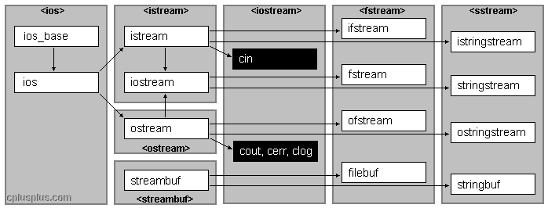
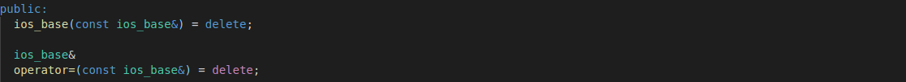
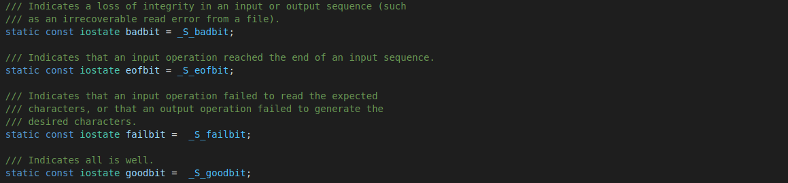
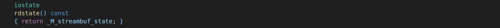
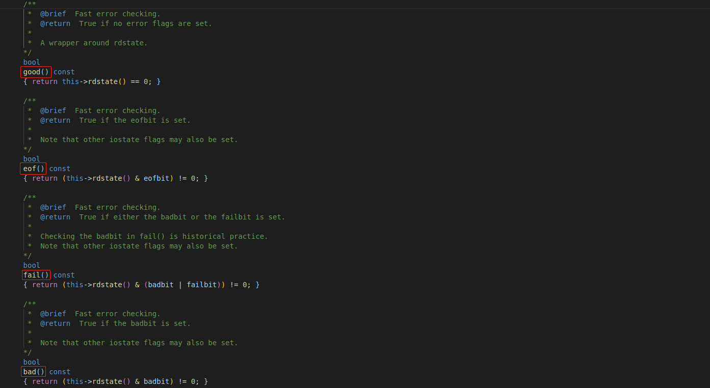
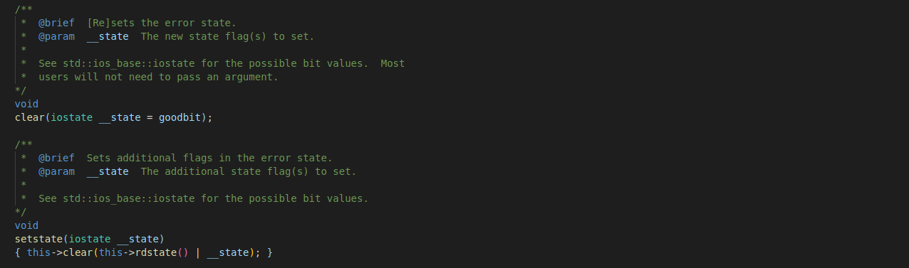
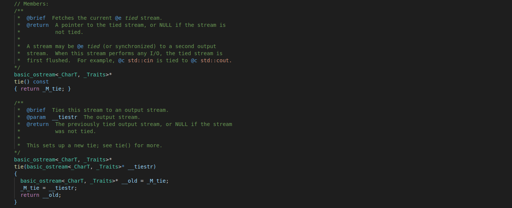
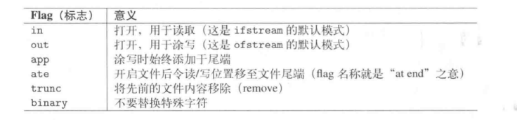
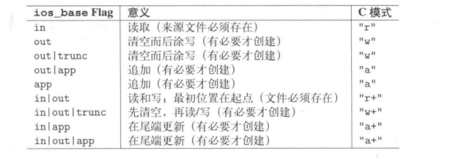

C++ IO 标准库
前言
C++ 语言不直接处理输入和输出，而是通过一族定义在标准库中的类型来处理 IO。平时我们用的比较多的 cin 和 cout 就是标准库中的 IO 对象，其直接关联到标准的输入输出，其实标准库还为我们提供了文件 IO 和内存 IO ，通过包含三个独立的头文件，我们则可以使用这些 IO 类型。
#include <iostream>：读写流的基本类型，提供了 istream、ostream、iostream 等类型。#include <fstream>：读写命名文件的类型，提供了 ifstream、ofstream、fstream 等类型。#include <sstream>：读写内存 string 对象的类型，提供了 istringstream、ostringstream、stringstream 等类型。
IO 类型的共性
IO 库的类继承如下，可以看到 ifstream 和 istringstream 继承自 istream，而 oftream 和 ostringstream 继承自 fstream，所以我们如何使用 cin 和 cout，就可以同样的使用这些类型的对象。

同时，由于 IO 类型都是从 ios 类继承而来，所以 ios 中会提供 IO 类型的一些共有属性，包括控制 IO 对象不可拷贝的特性和条件状态等。
IO 对象不可拷贝或赋值
直接看基类 ios_base 的代码，可以看到其拷贝构造函数和拷贝赋值函数被禁用了，这也就导致 IO 对象不可以拷贝和赋值：

比如说如下代码是不正确的：
1 | std::istream is = cin; // 错误，因为拷贝构造函数被禁用 |
这也是为什么我们在自定义类中重载输入输出运算符的时候，都是通过传引用的方式来传递流对象。
条件状态
IO 操作是可能发生错误的，每个 IO 对象中都会保留一个条件状态，可以帮助我们来识别 IO 流的当前的状态。首先每个对象会用一个枚举类型 iostate 的变量来保存状态，在我参阅的源代码中，该变量名为 _M_streambuf_state。在 ios_base 基类中，定义了四个 static const 成员用来标志流的不同状态：

- badbit 表示系统级的错误导致流已经崩溃，如不可恢复的读写错误。一般来说，如果 badbit 被置位，流就无法使用了。
- failbit 表示 IO 操作失败了，如期望读取数值但是读出一个字符等错误。这种问题通常可以修正，流还可以继续使用。
- eofbit 表示流到达了文件结束，而流在达到文件结束的位置时，eofbit 和 failbit 都会被置位。
- goodbit 表示流未发生错误，其值为 0。
一个流对象可以调用成员函数 strm.rdstate() 返回流的当前状态，其实现如下，就是返回了用来存储流状态的 _M_streambuf_state 成员：

相应的，标准库还提供了以一组函数来查询这些标志位的状态。

注意，其中的 good() 函数通过比较当前的流状态是否为 0 来判断其是否有效，因为正如前面所说，goodbit 的值为 0 。而 fail() 函数在 badbit 或者 failbit 被置位时都会返回真。** 我们经常在写代码的时候会把 cin 作为一个条件判断，例如会写 while (cin >> word) 这样的代码，之所以 cin 可以作为一个 bool 类型来使用，是因为在 IO 类中实现了类型转换操作符，在我参阅的代码中其实现如下，可见，判断一个流是否有效就是看他的 failbit 或 badbit 是否被置位，但凡有一个被置位了，流就无效了。**
同样，IO 类中还提供了 clear() 成员函数来将流的状态刷新，提供了 setstate() 函数来将指定的标志位置位设置流的状态。

IO 缓冲区
每个输出流都管理一个缓冲区，用来保存程序读写的数据。需要输出的数据都是被存储在缓冲区，然后在特定的情况下被刷新写入到相关的设备。导致缓冲区刷新的原因有：
- 程序正常结束，作为 main 函数 return 操作的一部分，缓冲区会被刷新。
- 缓冲区满时。
- 利用操纵符 flush 或 endl 等来显示的刷新缓冲区。
- 利用操纵符 unitbuf 设置流的内部状态，清空缓冲区。默认情况下，对于流对象 cerr 是设置 unitbuf 的，因此写到 cerr 的内容都是立即刷新。
- 一个输出流可能被关联到另外一个流，在此种情况下，当读写被关联的流时，关联到的流的缓冲区会被刷新。例如，默认情况下，cin 和 cerr 都关联到 cout ，因此，读 cin 或写 cerr 都会导致从 cout 的缓冲区被刷新。
通过如下代码演示对流缓冲区的操作：
1 | cout << "hello world!" << endl; // 输出 hello world! 和一个换行，然后刷新缓冲区 |
通过 tie() 成员函数可以关联输入输出流。其实有两个版本，如下：

其中无参数的版本直接返回当前的输入流对象所关联到输出流对象的指针，如 **cin.tie()**，会返回 cout 的地址。带参数的版本接收一个输出流的指针，将自己关联到该输出流，返回之前自己所关联的输出流的指针，如 **cin.tie(&cerr)**，会使得 cin 关联到 cerr 对象。
文件 IO
头文件 fstream 定义了三个类型来支持文件 IO：
- ifstream：从一个给定文件读取数据
- ofsream：向一个给定的文件写入数据
- fstream ：读写给定的文件
文件 IO 的三种类型也是从 iostream 头文件中的标准 IO 继承而来，所以适用于 cin 和 cout 的操作也同样适用于文件 IO 类型。
当我们想要读写一个文件的时候，可以定义一个文件流对象，并将对象和文件关联起来。有三种创建文件流对象的方式，如下：
fstream fst;：默认构造函数，创建一个未绑定文件的文件流。fstream fst(str);：接收一个 string 类型或者一个指向 C 风格字符串的指针作为参数，创建一个文件流对象，同时调用 open 函数打开文件，将其与文件流对象关联。fstream fst(str, mode);：与前一个构造函数相似，但同时指定文件模式。
若在创建一个文件流对象的时候指定其关联的文件名，则会自动调用 open() 函数打开文件。 如下：1
2
3
4
5
6
7
8
9
10
11
12
13
14
15
using namespace std;
int main()
{
ifstream ifs;
ofstream ofs("output.txt");
cout << "Is ifs opened? " << ifs.is_open() <<endl;
cout << "Is ofs opened? " << ofs.is_open() <<endl;
ifs.open("input.txt"); //调用 open 函数关联文件和文件流对象，若关联失败，流对象的 fallbit 标志位会被置位
ifs.close();
ofs.close(); //关闭文件，若不显式调用，则在文件流对象被析构的时候会自动调用。若要将一个已经关联到文件的文件流对象重新关联到另外一个文件，则应该先用 close 函数关闭文件，再通过 open 函数来关联，否则是 open 失败，fallbit 被置位。
return 0;
}
在创建一个文件流对象的时候可以指定其关联文件的文件模式，通过 open 函数关联一个文件的时候也可以指定文件的文件模式，文件模式总共有如下几种：

指定文件模式有如下限制：
- 只可以对 ofstream 和 fstream 对象设定 out 模式。
- 只可以对 ifstream 和 fstream 对象设定 in 模式。
- 只有当 out 也被设定时才可以设定 trunc 模式。
- 只要 trunc 模式没被设定，就可以设定 app 模式。在 app 模式下，即使没有显式指定 out 模式，文件也总以输出方式被打开。
- 默认情况下，以 out 模式打开的文件也会被移除，为了保留以 out 模式打开的文件的内容必须同时指定 app 模式，或者同时指定 in 模式。

string 流
string 流机制可以用来读取 string 或者将数据写至 string，string 流对象提供有缓冲机制，这项技术的主要用途就是”以独立于真实 I/O 设备以外“的方式来处理 I/O。比如，我们可以从文件中逐行的读取数据到一个 string 对象 中（利用 getline 函数），并且将该 string 对象关联到一个 istringstream 对象，这样就可以以 I/O 的方式对文件的每一行进行处理；或者利用 ostringstream 对象，可以在内存 I/O 的对象就设定文字格式，之后再一并发送到某个输出通道。string 流最关键的函数是以下两个，用来管理其缓冲区：
示例代码如下：
1 |
|
参考资料： 《C++ Prime》